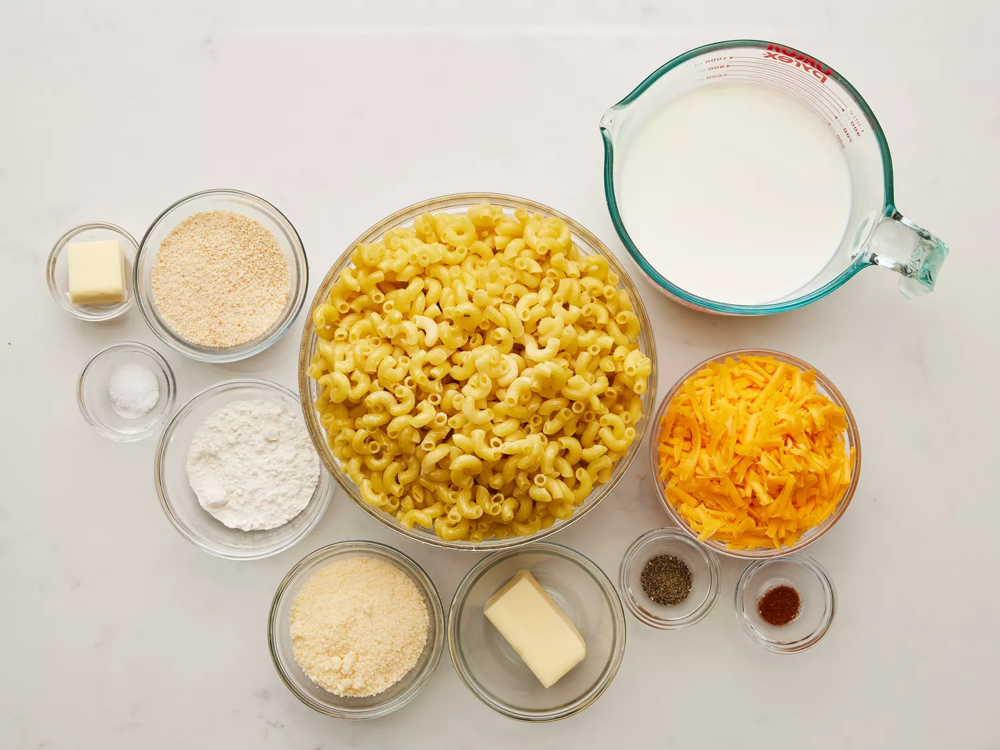
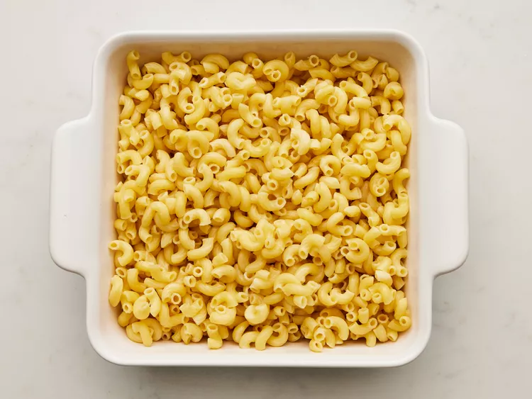
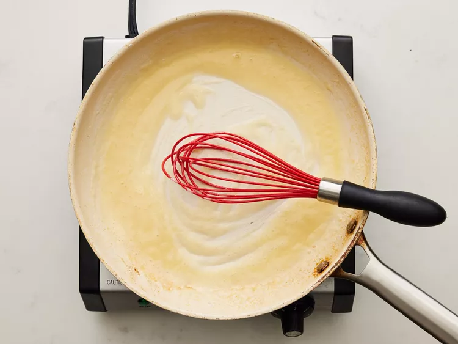
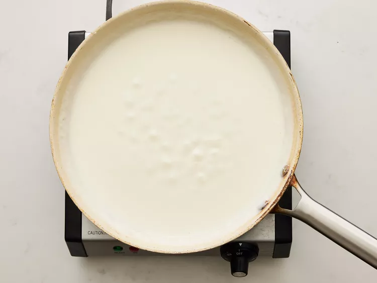
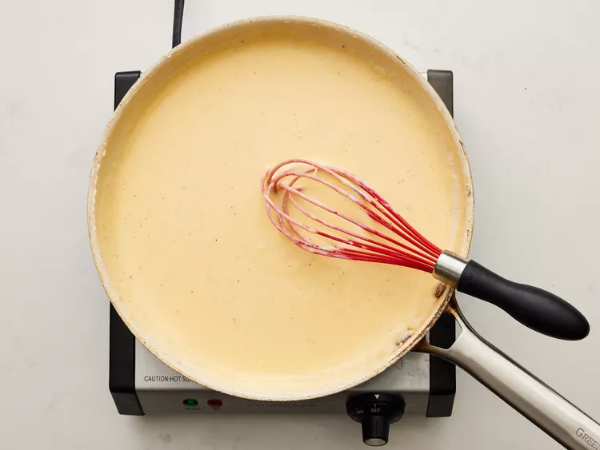
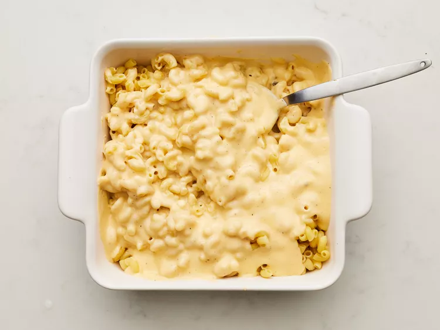
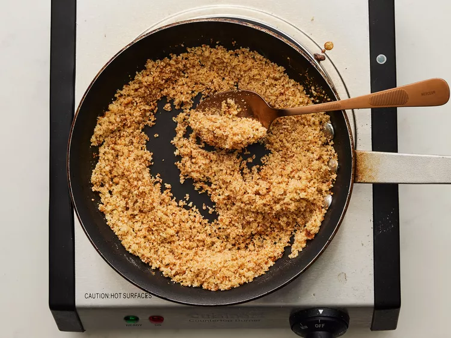
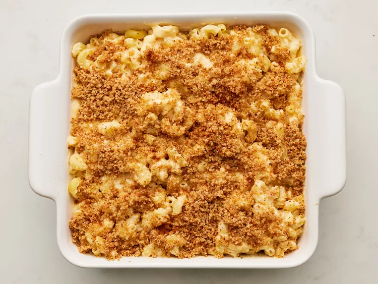

This homemade mac and cheese is topped with buttered bread crumbs for pure comfort food. It's easy to make the cheese sauce from scratch, starting with a roux and adding milk, Cheddar, and Parmesan to make a rich, decadent sauce that coats every nook and cranny of the noodles.
These are the ingredients you'll need to make the best homemade mac and cheese of your life:
You'll find the full, step-by-step recipe below — but here's a brief overview of what you can expect when you make this crowd-pleasing homemade mac and cheese:
Gather all ingredients. Preheat the oven to 350 degrees F (175 degrees C). Grease an 8-inch square baking dish.
To make the macaroni and cheese: Bring a large pot of lightly salted water to a boil. Add macaroni and simmer, stirring occasionally, until tender yet firm to the bite, about 8 minutes; it will finish cooking in the oven. Drain and transfer to the prepared baking dish.
While the macaroni is cooking, melt 1/4 cup butter in a medium skillet over low heat. Whisk in flour and stir until the mixture becomes paste-like and light golden brown, 3 to 5 minutes.
Gradually whisk 2 ½ cups milk into the flour mixture, and bring to a simmer.
Stir in shredded Cheddar and finely grated Parmesan cheeses; season with salt and pepper. Cook and stir over low heat until cheese is melted and sauce has thickened, 3 to 5 minutes, adding up to 1/2 cup more milk if needed.
Pour cheese sauce over macaroni and stir until well combined.
Make the bread crumb topping: Melt 2 tablespoons butter in a skillet over medium heat. Add bread crumbs; cook and stir until well coated and browned.
Spread bread crumbs over macaroni and cheese, then sprinkle with paprika.
Bake in the preheated oven until topping is golden brown and macaroni and cheese is bubbling, about 30 minutes.